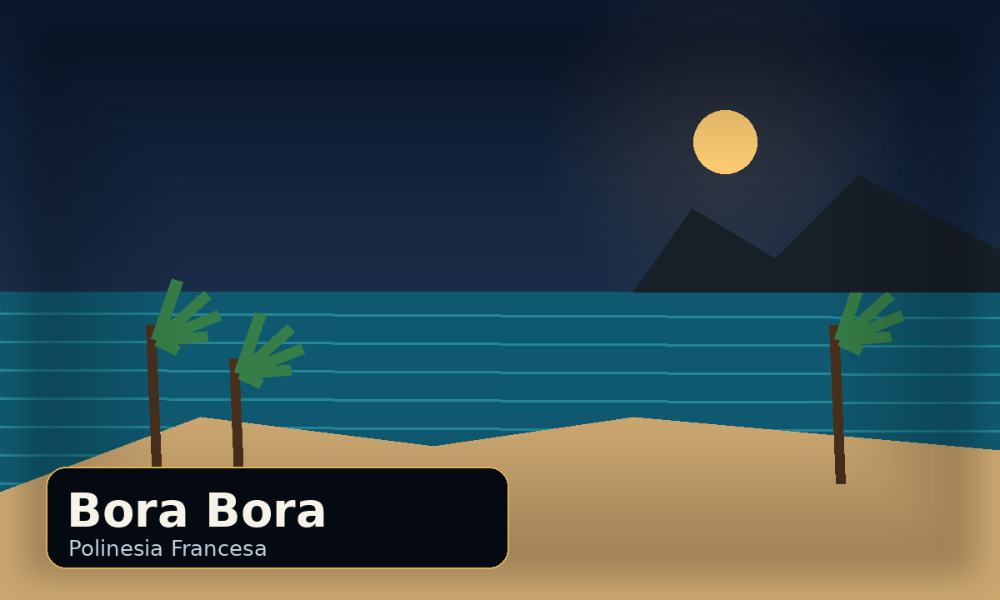
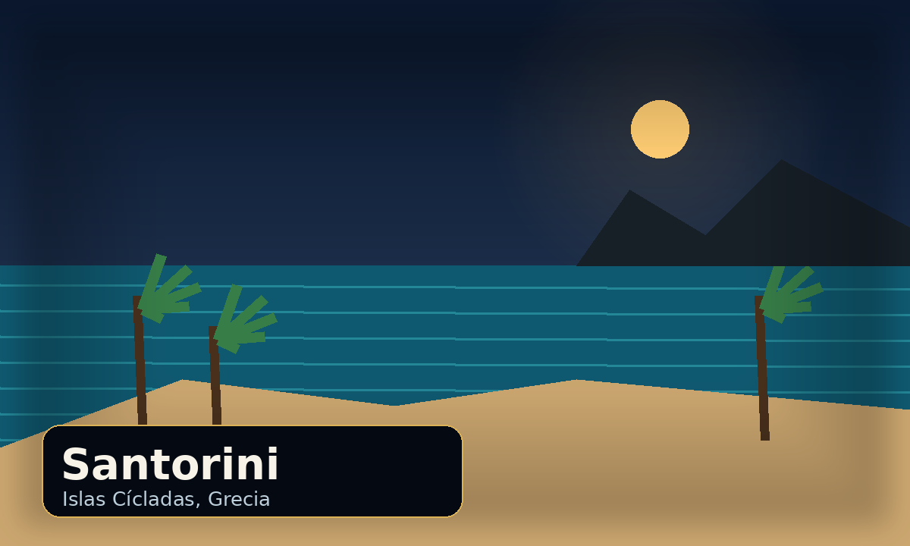
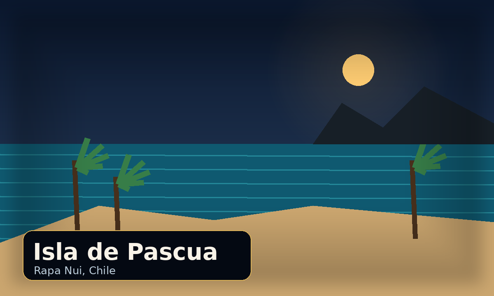
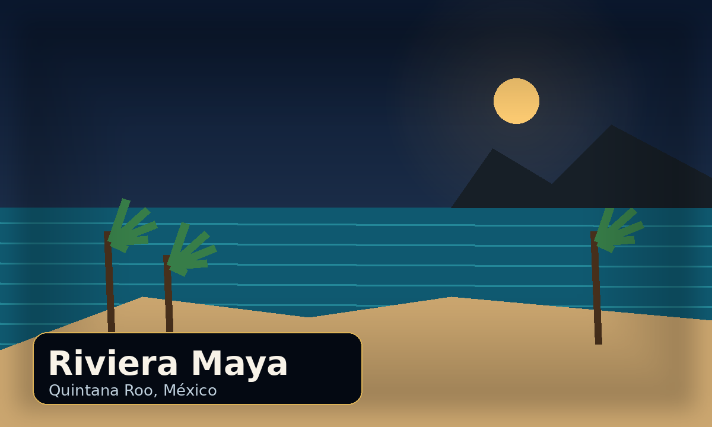
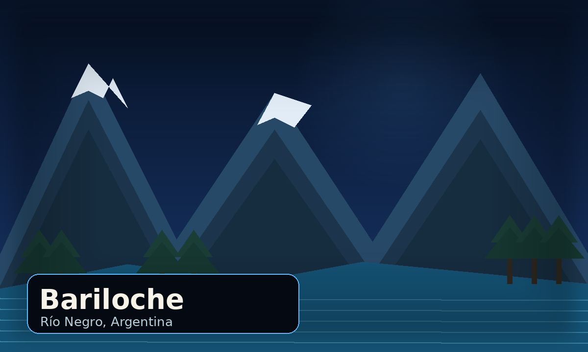
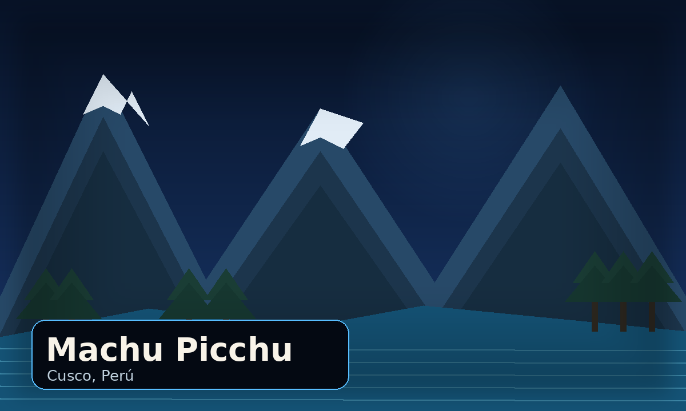
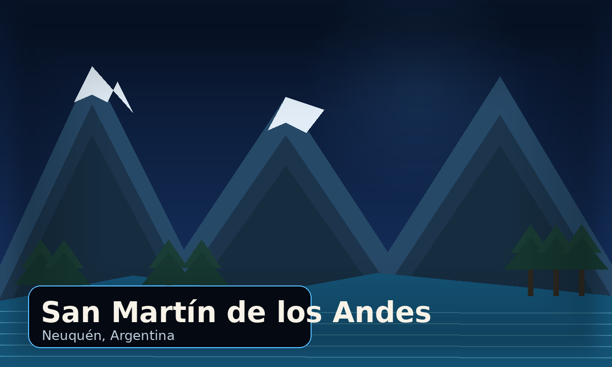
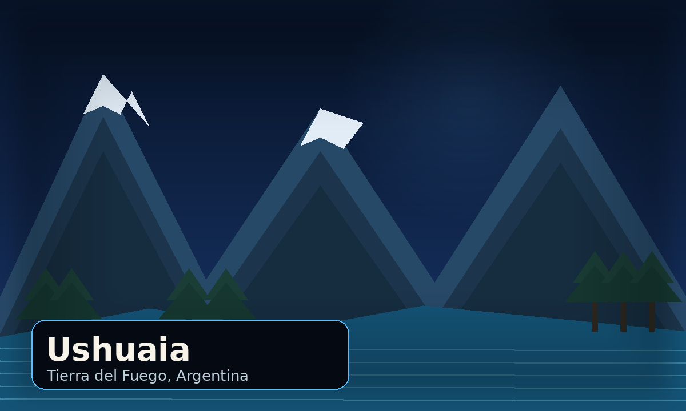

Quintana Roo, México
Tulum
Playa turquesa, ruinas mayas y un ambiente bohemio único.
↓ Descargar itinerarioElegí tu próxima aventura entre playas de ensueño y montañas que conectan con lo esencial.
Explorá destinos seleccionados y descargá su itinerario recomendado.
Arena, mar y paisajes de ensueño.
Playa turquesa, ruinas mayas y un ambiente bohemio único.
↓ Descargar itinerario
Aguas cristalinas, laguna azul y bungalows sobre el mar.
↓ Descargar itinerario
Casas blancas, cúpulas azules y atardeceres inolvidables.
↓ Descargar itinerario
Moáis, cultura ancestral y paisajes volcánicos frente al océano.
↓ Descargar itinerario
Cenotes, selva, arrecifes y playas paradisíacas del Caribe.
↓ Descargar itinerarioAlturas que te conectan con lo esencial.

Lagos, bosques y montañas para desconectar en cualquier estación.
↓ Descargar itinerario
Historia, naturaleza y una energía única entre montañas andinas.
↓ Descargar itinerarioTrekking, glaciares y agujas graníticas en el corazón patagónico.
↓ Descargar itinerario
Aventura, lagos transparentes y bosques nativos en la cordillera.
↓ Descargar itinerario
El fin del mundo te espera con senderos, nieve y paisajes australes.
↓ Descargar itinerario